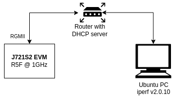

1. J721S2 Datasheet¶
1.1. Introduction¶
This section provides the performance numbers of device drivers supported in PDK
1.1.1. Setup Details¶
| SOC Details | Values |
|---|---|
| Core | R5F |
| Core Operating Speed | 1GHz |
| DDR Speed | 4266 MTs |
| VPAC Frequency | 650 MHz |
| DMPAC Frequency | 520 MHz |
| Cache status | Enabled |
| Optimization Details | Values |
|---|---|
| Profile | Release |
| Compile Options for R5F | -g -ms -DMAKEFILE_BUILD -c -qq -pdsw225 –endian=little -mv7R5 –abi=eabi -eo.oer5f -ea.ser5f –symdebug:dwarf –embed_inline_assembly –float_support=vfpv3d16 –emit_warnings_as_errors |
| Linker Options for R5F | –emit_warnings_as_errors -w -q -u _c_int00 -c -mv7R5 –diag_suppress=10063 -x –zero_init=on |
| Code Placement | DDR |
| Data Placement | DDR |
1.1.2. Software Performance Numbers¶
1.1.2.1. VHWA¶
| VHWA Driver | Configuration | Measured Throughput (MPix/S) |
|---|---|---|
| DOF | 2MP (2048x1024), 12b Packed, 6 Levels, SR191x96 | 143.38 |
| DOF | 1MP (1312x736), 12b Packed, 5 Levels, SR170x124 | 134.37 |
| MSC | 1080P, 8b YUV420, 10 Scales output | 674.60 |
| NF | 720P, 8b YUV420, Bilateral filter | 678.21 |
| SDE | 2MP (2048x1024), 12b Packed, SR 192, LR Enabled | 77.75 |
| SDE | 720P, 12b Packed, SR 192, LR Disabled | 91.33 |
| LDC | 1080P, 8b YUV420, Single region | 700.50 |
| VISS | 1080P, Raw 12 input, 2 frame Merge, YUV420 12b and 8b output | 662.84 |
1.1.2.2. DSS¶
| Display Type | Configuration | CPU Load |
|---|---|---|
| DP | 1080P60 BGRA32 | 1.0% (MCU2_0) |
1.1.2.3. UDMA¶
1.1.2.3.1. DMA Parameters¶
- Ring Order ID: 0
- Channel Order ID: 0
- Channel DMA Priority: 1
- Channel Bus Priority: 4
- Channel BUS QOS: 4
- Channel TX FIFO depth: 128
- Channel Fetch Word Size: 16
- Channel Burst Size: 64 bytes for normal channel, 128 bytes for HC and UHC channels
1.1.2.3.2. Test Parameters¶
- Type: TR15 Block copy
- TR: one TR per TRPD in PBR mode
- TR Memory: Same as buffer memory (DDR, MSMC or OCMC depends on the test performed)
- Transfer Size: 1 MB read and 1MB write
- 1MB means 1000x1000 bytes and 1KB means 1000 bytes
Note: Throughput numbers mentioned is the combined memory throughput of both read and write operations
1.1.2.3.3. DRU Blockcopy¶
DRU channel performance with TR submitted through ring
| Test Description | Throughput (MCU2) | CPU Load (MCU2) | Throughput (C7x_1) | CPU Load (C7x_1) |
|---|---|---|---|---|
| [PDK-3501] 1CH DDR 1MB to DDR 1MB | 14563 MB/sec | 5% | 14655 MB/sec | 9% |
| [PDK-3502] 1CH MSMC 1KB Circular to DDR 1MB | 36535 MB/sec | 7% | 32214 MB/sec | 12% |
| [PDK-3503] 1CH DDR 1MB to MSMC circular 1KB | 25637 MB/sec | 6% | 24049 MB/sec | 11% |
| [PDK-3504] 1CH MSMC 1KB to MSMC circular 1KB (1MB per TR) | 55924 MB/sec | 7% | 41859 MB/sec | 11% |
| [PDK-3505] Multi CH DDR 1MB to DDR 1MB | 20540 MB/sec (2CH) | 11% | 14533 MB/sec (2CH) | 19% |
| [PDK-3506] Multi CH MSMC 1KB to MSMC circular 1KB (1 MB per TR) | 59918 MB/sec (2CH) | 31% | 19368 MB/sec (2CH) | 17% |
1.1.2.4. OSPI¶
1.1.2.4.1. OSPI Memory Non Cached Test Set-up¶
- Platform: J721S2 EVM.
- OS Type: Baremetal/FreeRTOS.
- Core : R5F_0 at 1 GHz, A72_0 at 2 GHz.
- Software/Application Used: OSPI_Flash_TestApp/OSPI_Flash_Dma_TestApp/OSPI_Baremetal_Flash_TestApp/OSPI_Baremetal_Flash_Dma_TestApp
- System Configuration: Cache OFF, Read/Write Buffer in DDR. DMA Enabled/Disabled, Interrupts ON.
1.1.2.4.2. OSPI Read/Write Performance (DDR Octal Mode)¶
| OSPI RCLK | OS | CPU | Mode | Write Tput (MB/s) | Write CPU Load | Read Tput (MB/s) | Read CPU Load |
|---|---|---|---|---|---|---|---|
| 133 MHz | Baremetal | R5F_0 | DAC | 7.302 | |||
| DAC DMA | 263.250 | ||||||
| INDAC | 0.532 | 23.583 | |||||
| A72_0 | DAC | 3.579 | |||||
| DAC DMA | 265.529 | ||||||
| INDAC | 0.547 | 12.921 | |||||
| RTOS | R5F_0 | DAC | 7.402 | 51% | |||
| DAC DMA | 262.669 | 1% | |||||
| INDAC | 0.546 | 100% | 23.696 | 51% | |||
| 166 MHz | Baremetal | R5F_0 | DAC | 8.500 | |||
| DAC DMA | 328.875 | ||||||
| INDAC | 0.532 | 24.00 | |||||
| A72_0 | DAC | 5.331 | |||||
| DAC DMA | 330.781 | ||||||
| INDAC | 0.546 | 12.921 | |||||
| RTOS | R5F_0 | DAC | 8.569 | 51% | |||
| DAC DMA | 326.455 | 1% | |||||
| INDAC | 0.546 | 100% | 23.869 | 51% |
1.1.2.4.3. OSPI Memory Cached Test Set-up¶
- Platform: J721S2 EVM.
- OS Type: Baremetal/FreeRTOS.
- Core : R5F_0 at 1 GHz, A72_0 at 2 GHz.
- Software/Application Used: OSPI_Flash_Cache_TestApp/OSPI_Flash_Dma_Cache_TestApp/OSPI_Baremetal_Flash_Cache_TestApp/OSPI_Baremetal_Flash_Dma_Cache_TestApp
- System Configuration: Cache ON, Read/Write Buffer in DDR. DMA Enabled/Disabled, Interrupts ON.
1.1.2.4.4. OSPI Read/Write Performance (DDR Octal Mode)¶
| OSPI RCLK | OS | CPU | Mode | Write Tput (MB/s) | Write CPU Load | Read Tput (MB/s) | Read CPU Load |
|---|---|---|---|---|---|---|---|
| 133 MHz | Baremetal | R5F_0 | DAC | 81.625 | |||
| DAC DMA | 263.75 | ||||||
| INDAC | 0.532 | 23.875 | |||||
| RTOS | R5F_0 | DAC | 64.404 | 51% | |||
| DAC DMA | 262.472 | 1% | |||||
| INDAC | 0.543 | 100% | 23.531 | 51% | |||
| 166 MHz | Baremetal | R5F_0 | DAC | 93.125 | |||
| DAC DMA | 328.75 | ||||||
| INDAC | 0.532 | 23.875 | |||||
| RTOS | R5F_0 | DAC | 69.844 | 51% | |||
| DAC DMA | 326.151 | 2% | |||||
| INDAC | 0.543 | 100% | 23.504 | 51% |
1.1.2.5. CPSW_2G¶
1.1.2.5.1. Test Setup¶
| Hardware Configuration | Value |
|---|---|
| Processing Core | Main R5F0 Core 0 |
| Core Frequency | 1 GHz |
| Ethernet Interface Type | RGMII at 1Gbps |
| Packet buffer memory | DDR |
| Hardware checksum offload | Yes |
| Scatter-gather TX | Yes |
| Scatter-gather RX | No |
| Software Configuration | Value |
|---|---|
| RTOS | FreeRTOS |
| RTOS application | Enet LLD lwIP example |
| TCP/IP stack | lwIP 2.1.2 |
| Host PC tool version | iperf v2.0.10 |
1.1.2.5.2. TCP Performance¶
1.1.2.5.2.1. Main CPSW2G - Main domain R5_0 core 0 (mcu2_0)¶
- Main domain R5_0 at 1GHz
- RGMII interface at 1Gbps
- TCP window size: 128 KByte
Single Direction Test
| Test | Measured Throughput (Mbps) | CPU Load (%) |
|---|---|---|
| TCP RX | 131.0 | 53 |
| TCP TX | 187.0 | 86 |
Bidirectional Test
| Test | Measured Throughput (Mbps) | CPU Load (%) |
|---|---|---|
| TCP RX | 105.0 | 99 |
| TCP TX | 139.0 |
1.1.2.5.2.2. CPSW2G - MCU domain R5 core 0 (mcu1_0)¶
- MCU domain R5_0 at 1GHz
- RGMII interface at 1Gbps
- TCP window size: 128 KByte
Single Direction Test
| Test | Measured Throughput (Mbps) | CPU Load (%) |
|---|---|---|
| TCP RX | 127.0 | 70 |
| TCP TX | 139.0 | 100 |
| Test | Bandwidth (Mbps) | CPU Load (%) |
|---|---|---|
| TCP RX | 123 | 38 |
| TCP TX | 186 | 62 |
| TCP Bidirectional | RX=137 TX=176 | 100 |
Host PC commands:
iperf -c <evm_ip> -r
iperf -c <evm_ip> -d
1.1.2.5.3. UDP Performance¶
| Test | Datagram Length = 64B | Datagram Length = 256B | Datagram Length = 512B | Datagram Length = 1470B | ||||||||
|---|---|---|---|---|---|---|---|---|---|---|---|---|
Bandwidth
(Mbps)
|
CPU
Load
(%)
|
Packet
Loss
(%)
|
Bandwidth
(Mbps)
|
CPU
Load
(%)
|
Packet
Loss
(%)
|
Bandwidth
(Mbps)
|
CPU
Load
(%)
|
Packet
Loss
(%)
|
Bandwidth
(Mbps)
|
CPU
Load
(%)
|
Packet
Loss
(%)
|
|
| UDP RX | 5.24 | 18 | 0.0 | 26.2 | 32 | 0.0 | 26.2 | 21 | 0.0 | 26.2 | 13 | 0.0 |
| 10.5 | 29 | 0.0 | 52.4 | 59 | 0.031 | 52.4 | 35 | 0.0 | 52.4 | 20 | 0.0 | |
| 15.7 | 41 | 0.0 | 105 | 105 | 66 | 0.077 | 105 | 35 | 0.0 | |||
| UDP RX (Max) | 38.8 | 100 | 0.019 | 83.9 | 100 | 0.028 | 157 | 100 | 0.0089 | 320 | 100 | 0.0019 |
| UDP TX (Max) | 44.9 | 100 | 0.0737 | 110 | 100 | 0.0408 | 220 | 100 | 0.03273 | 614 | 100 | 0.0505 |
Host PC commands:
Test with datagram length of 64B:
iperf -c <evm_ip> -u -l64 -b<bw> -r where <bw> is 5M, 10M, 15M, etc
Test with datagram length of 256B:
iperf -c <evm_ip> -u -l256 -b<bw> -r where <bw> is 25M, 50M, 100M, etc
Test with datagram length of 512B:
iperf -c <evm_ip> -u -l512 -b<bw> -r where <bw> is 25M, 50M, 100M, etc
Test with datagram length of 1470B (max):
iperf -c <evm_ip> -u -b<bw> -r where <bw> is 25M, 50M, 100M, etc
1.1.2.6. SBL OSPI Boot Performance App¶
1.1.2.6.1. Test Set-up¶
- Platform: J721S2 EVM.
- OS Type: Baremetal
- Core : R5F_0 at 1 GHz
- Software/Application Used: sbl_cust_img (with custom flags) and sbl_boot_perf_test appimage
1.1.2.6.2. GP EVM Performance¶
| SBL Boot Time Breakdown | Time (ms) |
| MCU_PORZ_OUT to MCU_RESETSTATz | 0.63 |
| ROM : init + SBL load from OSPI | 7.526 |
| SBL : SBL_SciClientInit: ReadSysfwImage | 0.052 |
| Load/Start SYSFW | 4.042 |
| Sciclient_init | 3.152 |
| Board Config | 1.848 |
| PM Config | 0.386 |
| Security Config | 0.156 |
| RM Config | 0.377 |
| SBL: SoC Late-Init | 0.00 |
| SBL : Board_init (pinmux) | 2.476 |
| SBL : Board_init (PLL) | 1.138 |
| SBL: Board_init (CLOCKS) | 1.084 |
| SBL: OSPI init | 0.143 |
| SBL: App copy to MCU SRAM & Jump to App | 2.314 |
| Misc | 0.001 |
| MCUSW: CAN response | 1.00 |
| TOTAL time | 26.325 |